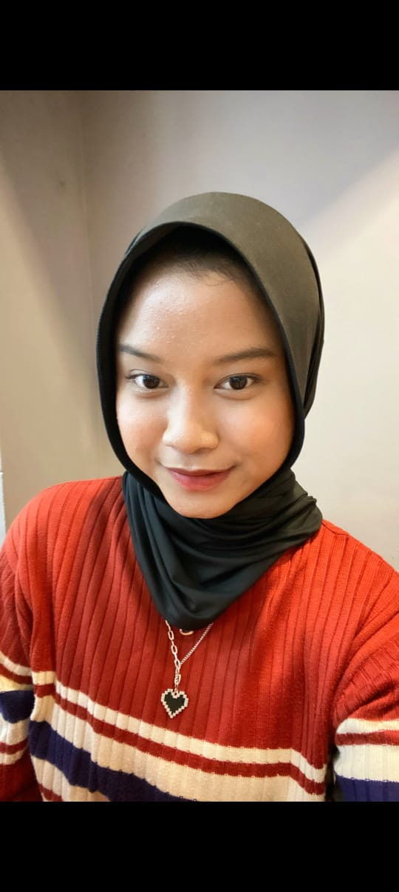
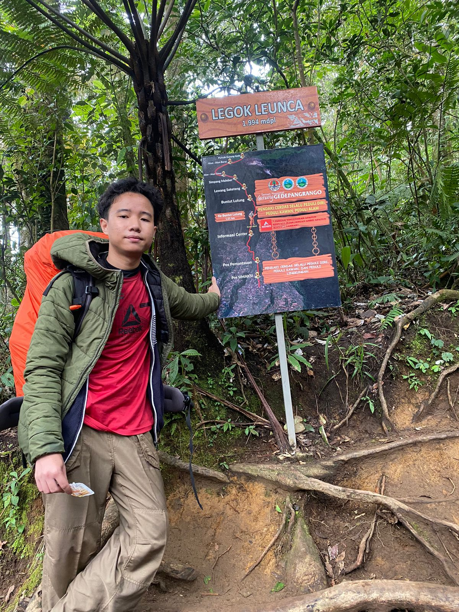
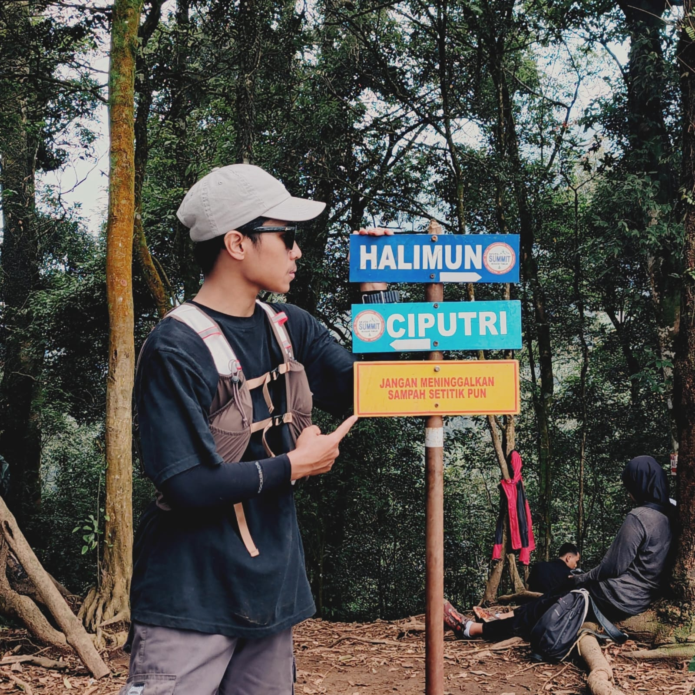

Ganni Willujeng Yonastrie
Ganni Willujeng Yonastrie bercita-cita bekerja di bidang pemerintahan agar dapat berkontribusi bagi masyarakat. Di waktu luang, Gani senang berolahraga dan memasak sebagai cara untuk menjaga keseimbangan antara tubuh dan pikiran.

Zalfa Indah Rianti
Zalfa Indah Rianti bercita-cita melanjutkan pendidikan di Poltekkes karena memiliki ketertarikan pada dunia kesehatan dan ingin membantu banyak orang. Selain fokus pada cita-citanya, Zalfa juga gemar bermain basket, olahraga yang menurutnya melatih kerja sama, ketangguhan, dan semangat pantang menyerah.

Cleva Najwan Yusdiana
Cleva Najwan Yusdiana bercita-cita menjadi seorang advokat yang mampu menegakkan keadilan dan membela kebenaran. Di luar kesibukannya mengejar cita-cita, Cleva memiliki hobi mendaki gunung, kegiatan yang mengajarkannya tentang ketenangan, ketekunan, dan kekuatan dalam menghadapi setiap rintangan.

Fairuz Sconda Ramadhan
Fairuz Sconda Ramadhan bercita-cita menjadi seorang billionaire yang sukses dan dapat menginspirasi banyak orang. Dalam perjalanan menuju mimpinya, Fairus gemar berolahraga dan mendaki gunung untuk melatih ketangguhan, fokus, serta semangat pantang menyerah dalam menghadapi setiap tantangan hidup.
.jpeg)